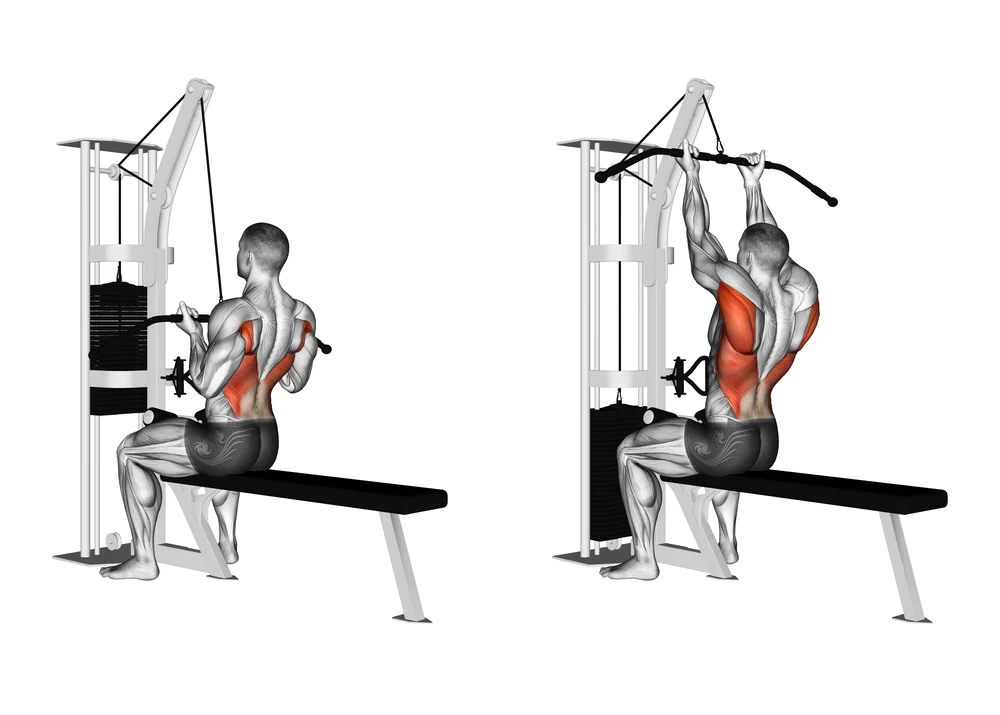
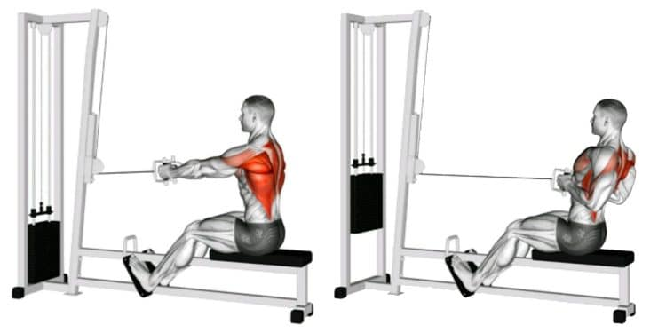
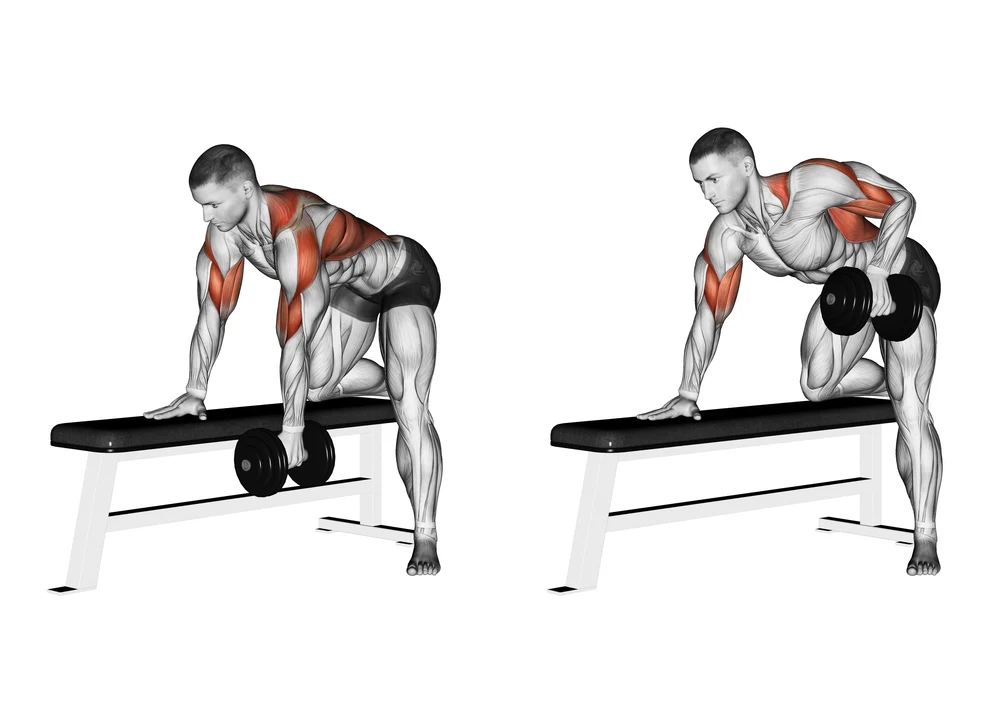
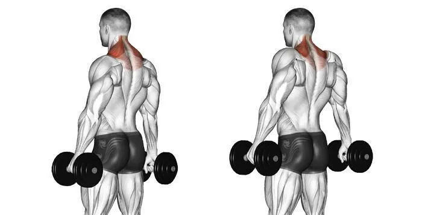

Lateral Pulldown
Step:1 When sitting down ensure the seat is adjusted so that the pads are tight against your legs
Step:2 Adjust your grip so your hands are slightly wider than your shoulders
Step:3 Pull the bar down while tucking your shoulder blades and making them touch (a good cue is to imagine your shoulder blades squeezing something together)
Step:4 When ascending with the bar be sure to maintain control and allow the bar to move with your shoulder blades
Close Grip Row
Step:1 Establish good foot placement to maintain a stable body throughout the movement
Step:2 Slightly bend your knees and grab a hold of the handle
Step:3 Using your legs pull the handle to get into a seated position
Step:4 Fully extend your arms out in front while maintaining your back vertical to the floor
Step:5 Retract utilizing your back muscles while maintaining elbows at a 45 degree angle
Step:6 Return to the starting position in a slow and controlled manner
Dumbbell Row
Step:1 Place your dumbbell on the side of the bench you plan to start with
Step:2 Place your knee at the end of the bench
Step:3 Place your palm on the bench while ensuring it is straight out as to form a 90 degree angle with the body
Step:4 With your free hand grab the dumbbell and pull (ensure elbow is at 60 degrees from hip)
Step:5 Allow the dumbbell to descend slow and controlled
Dumbbell Shrugs
Step:1 Grab two dumbbells and stand at a narrow stance
Step:2 Ensure dumbbells are at your side and puff out your chest
Step:3 pull your shoulder joints straight up as if they were going to touch the ceiling
Step:4 Slowly lower the weight to the starting position